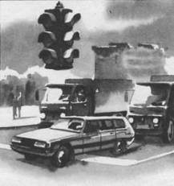

Экстренный ударный разгон
Опасность многих критических ситуаций можно существенно уменьшить за счет интенсивного разгона. Это относится к попутному столкновению, обгону, экстренному объезду препятствий и многим, к сожалению, типичным случаям, когда необходимо уйти от столкновения, вызванного грубыми ошибками других водителей или нарушениями Правил дорожного движения.
Другим немаловажным фактором, обосновывающим необходимость данного приема, является широкое применение экономичного вождения. Этот способ стал достоянием многих водителей из-за дефицита и высокой стоимости топлива. Но многие водители не понимают, что, выигрывая в одном, в частности расходе бензина, они проигрывают в другом – безопасности. Движение в транспортном потоке или в условиях сложного рельефа на повышенных передачах и низких оборотах снижает динамические возможности двигателя. Резкое дросселирование как реальный прием скоростного маневра не дает ожидаемого эффекта во многих ситуациях, связанных с дефицитом времени, например при обгоне с опасностью лобового столкновения.
Снизить опасность многих критических ситуаций можно за счет сокращения времени маневра, а для этого необходимо использовать динамические качества автомобиля. В свою очередь резкое ускорение возможно, лишь когда двигатель разовьет высокие обороты.
Экстренный разгон с места выполняется резким включением сцепления при мощности, обеспечивающей максимальную тягу (для двигателей семейства ВАЗ не менее 4000 об/мин, при которых обеспечивается максимальный крутящий момент). Возникающая пробуксовка ведущих колес позволяет поддерживать высокую мощность двигателя, повысить температуру шин и увеличить сцепление качества покрышки. Однако этот способ трогания с места не дает ожидаемого эффекта при низком коэффициенте сцепления (см. прием 11). Включение II и последующих передач выполняется после того, как двигатель вышел в режим максимальных оборотов. “Перекрут”– задержка переключения в режиме критических оборотов – нежелателен, так как четырехтактный двигатель может в этом режиме снизить мощность из-за “зависания” клапанов. Повышающую передачу и сцепление включают резко, ударным способом. В исключительных случаях возможен неполный выжим педали сцепления без “сброса газа”, т. е. не снижая оборотов. Естественно, что такая эксплуатация автомобиля не принесет ему пользы, а повредит синхронизаторы, вызовет и другие микрополомки. Однако в случаях реальной опасности не может быть другого решения.
Экстренный разгон сходу требует чаще всего резкого включения понижающей передачи при одновременном повышении оборотов двигателя.

Если вы хотите резко стартовать с места на сухом асфальте, используйте всю мощность двигателя, которая обеспечивается максимальной частотой вращения.
Включайте следующую передачу с таким расчетом, чтобы после включения сохранить режим максимальной тяги.
Если необходимо для безопасности, то включение передач выполняйте резко без “сбросе газа” и при неполном включении сцепления.
Это достигается скоростной “перегазовкой”, которая обеспечивается задержкой включения сцепления. Растянутое по времени включение сцепления позволяет за счет пробуксовки дисков повысить частоту вращения коленчатого вала двигателя и динамику разгона.
В отдельных случаях, когда дефицит времени не позволяет переключить передачи, один или несколько циклов пробуксовки сцепления (неполный выжим) дают одномоментное повышение мощности и, как следствие, небольшой импульс ускорения. Такой прием может быть использован при преодолении вершины холма, в заключительной фазе обгона и во многих других случаях, когда даже несколько метров дистанции могут отдалить от аварийной ситуации.